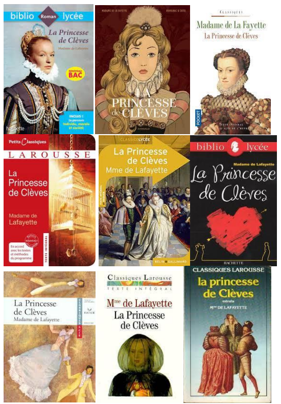

La Princesse de Clèves - Lafayette
1 - Mes notes au fur et à mesure de ma lecture
- Je suis difficilement entré dans la lecture car je ne comprenais pas vraiment quand
commençait réellement l'histoire.
- Le contexte historique réaliste est un élément qui m'a beaucoup plus,
mais je n'ai pas trop aimé les longues descriptions détaillées.
De plus j'ai bien apprécié la présentation de la Princesse de Clèves
qui est une représentation de la vertue.
- L'individu ne vit pas seul,
il vit en société qui est régie par des règles définie par
la morale qui guide les individus en fonction du bien et du mal.
Ces règles limitent nécessairement la liberté des individus.
La Princess de Clèves montre bien l'influence de la société sur
les individus qui est représenté par la cour.
Malgré le fait que la princesse de Clèves se rattachait à sa vertue pour résister face à la passion,
elle n'en resta pas moins tenté, mais vers la fin, le personnage a beaucoup évolué,
notamment grâce aux morts de sa mère puis de son mari,
elle se détacha et renonça à la passion.
2 - Mes citations et mes interprétations
| Citation |
Theme |
Interprétation |
| Si vous jugez sur les apparences, vous serez souvent trompée: ce qui paraît n'est presque jamais la vérité. |
Société |
Cette citation nous apprend que les apparences sont souvent trompeuses |
| On fait des reproches à un amant; mais en fait-on à un mari, quand on n'a qu'à lui reprocher de n'avoir plus d'amour? |
Morale |
Cette citation nous pousse à nous demander si un amant à qui on fait des reproches, n’a plus d’amour à fournir. |
| Les paroles les plus obscures d'un homme qui plaît donnent plus d'agitation que des déclarations ouvertes d'un homme qui ne plaît pas. |
Société |
Cette citation insinue que l’apparence est le plus important dans la société. |
| Toutes mes résolutions sont inutiles; je pensais hier à tout ce que je pense aujourd'hui et je fais aujourd'hui le contraire de ce que je résolus hier. |
Individu |
Cette citation nous montre que rien n’avance vraiment. |
| Les passions peuvent me conduire, mais elles ne sauraient m'aveugler. |
Morale |
Cette citation montre que la princesse de Clèves ne cèdera pas à la passion bien qu’elle en est tenté |
| Quand on croit être heureux, vous savez que cela suffit pour l'être. |
Individu |
Cette citation affirme que pour être heureux il suffit d’y croire. |
| La jalousie seule m'a fait sentir que j'étais amoureuse. |
Individu |
Cette citation affirme que la jalousie est un signe d’amour. |
| La jalousie seule m'a fait sentir que j'étais amoureuse. |
Société |
Cette citation nous apprend que tous les hommes sont fiers. |
| Est-il possible, lui disait-il, que je puisse n'être pas heureux en vous épousant ? |
Société |
Cette citation montre que l’amour du Prince de Clèves est à sens unique. |
| Ce qui troublait sa joie, était la crainte de ne lui être pas agréable, et il eût préféré le bonheur de lui plaire à la certitude de l'épouser sans en être aimé. |
Société |
Le Prince de Clèves aurait préféré être aimé. |
| Ayez cependant le plaisir de vous être fait aimer d'une personne qui n'aurait rien aimé si elle ne vous avait jamais vu ; |
Individu |
Le Prince de Clèves montre son amour passionné et fidèle. |
| Vous ne la connaissez que trop présentement, vous êtes sur le bord du précipice, il faut de grands efforts et de grandes violences pour vous retenir. |
Morale |
La Princesse de Clèves à prit trop de risques vers la Passion. |
| Il n’y a point d’obstacle, Madame, reprit M. de Nemours, vous seule vous imposez une loi que la vertu et la raison ne vous sauraient imposer. |
Morale |
Mme de Clèves refuse finalement l’amour de M.Nemours. |
| La jalousie, répondit-il, et la curiosité d'en savoir peut-être davantage que l'on ne lui en a dit peuvent faire faire bien des imprudences à un mari. |
Morale |
Cette citation nous fait comprendre que la jalousie et la curiosité peuvent faire pencher la Princesse du côté du vice. |
| Je n’ai nulle inquiétude de votre conduite, lui dit-il, vous avez plus de force et plus de vertu que vous ne le pensez. |
Morale |
Cette citation affirme que la Princesse de Clèves est capable de résister à la passion. |
3 - Mes impressions de lecture
- On peut donc voir, chez la Princesse de Montpensier et chez la princesse de Clèves,
que la passion qu'elle soit acceptée ou non, mène inéluctablement à la souffrance.
Mais nous pouvons souligner le fait que la Princesse de Clèves n’a pas accepté la passion mais
ne l’a pas repoussé pour autant (mise à part à la fin du livre)
- La princesse de Clèves n’a rien à envier aux autres figures féminines étudiées tels que Merteuil,
Manon Lescaut et Marthe, ces dernières sont manipulatrices, ont accepté et on cédé à la passion.
Mais contrairement à la Princesse de Clèves qui, tout comme elles, en est exposée et mène à la souffrance et à la mort.
Mais on peut tout de même considérer la Princesse de Clève comme un modèle de vertu à première vue.
- Dans toutes les littératures, qu’elles soient françaises ou mondiales, ont la dichotomie:
la sainte, la catin. Elle fait référence aux personnages bibliques Sainte Marie et Marie Madeleine.
On peut donc dans la princesse de Clèves identifier Mme de Clèves comme la sainte,
et on peut identifier les autres figures qui ont pris le chemin de la passion tel que la duchesse de Valentinois comme la catin.
- Quand on s’y intéresse plus, et qu’on la compare aux autres figures féminines,
on alors se demander si la Princesse est un modèle de vertu,
auquel cas on pourra répondre que oui car elle n’a jamais cédé à la passion mais on peut aussi le voir d’un autre point de vue,
par exemple dans la scène de l'aveu elle avoue à son mari qu’elle aime un autre homme.
Elle lui avoue tandis qu’elle sait que ça le blessera. On peut donc se demander si dans ce passage,
la vertu est de rien avouer pour préserver son mari ou alors de tout avouer et donc se sentir mieux.
- Le dénouement à été quelque peu décevant de part la solitude de la Princesse de Clèves ainsi que sa mort dans l’oubli.
La fin que j’aurais préféré aurait été une fin heureuse avec le Prince de Clèves et sans que le duc de Nemours apparaisse car
ça n’aurait pas affecté la vertue de Mme de Clèves bien qu'une fin telle que celle-ci soit impossible.
4 - Mon parcours artistique et culturel
- Pour la Princesse de Clèves, j’aurais choisi Elle Fanning,
de prime abord car elle a les cheveux de couleur similaire d’après la description de Mme de Clèves puis aussi qu’elle fait très jeune
et qu’elle a un air noble qui correspond au portrait. Pour le Prince de Clèves, j’aurais choisi Chris Evans car il est digne et fier,
et James Franco pour le Duc de Nemours car il incarne le portrait du Duc de Nemours, c'est à dire Orgueilleux, ambitieux et séducteur.
- Dans la première couverture, la noblesse et la beauté de la princesse de Clèves ont été mises en valeur
de part ses vêtements et ses bijoux, ainsi que sa posture.
Dans la deuxième couverture, sa beauté à été mise en valeur grâce au dessin et sa coupe de cheveux.
Dans la troisième couverture, sa vertue et sa noblesse ont étés mise en valeur grâce aux vêtements
Dans la quatrième couverture, la cage et au médaillon, nous pouvons comprendre que ce qui a voulu être mis en valeur ici
est la captivité de la Princesse de Clèves par l'opposition de sa passion et de sa vertue.
Dans la cinquième couverture, nous pouvons voir la représentation du bal, et donc ce qui est mis en valeur ici est
la beauté du duo de la Princesse de Clèves et du Duc de Nemours.
Dans la sixième couverture, ce qui est mis en avant est la tragédie amoureuse et la solitude la Princesse de Clèves,
car il y a un grand coeur ainsi que la silhouette d’un couple qui a leur heureux et une femme seule qu’on peut identifier comme la Princesse de Clèves.
Dans la septième couverture, ce qui a voulu être mis en valeur est le triangle amoureux par la représentation de la princesse de clèves et des deux hommes.
Dans la huitième couverture, la solitude de la princesse de clèves a été représenté
car on peut voir une femme vetue d’un habit noir avec un visage recouvert et un visage triste.
Dans la neuvième couverture, la noblesse a été représentée par les habits volumineux et raffinés.
